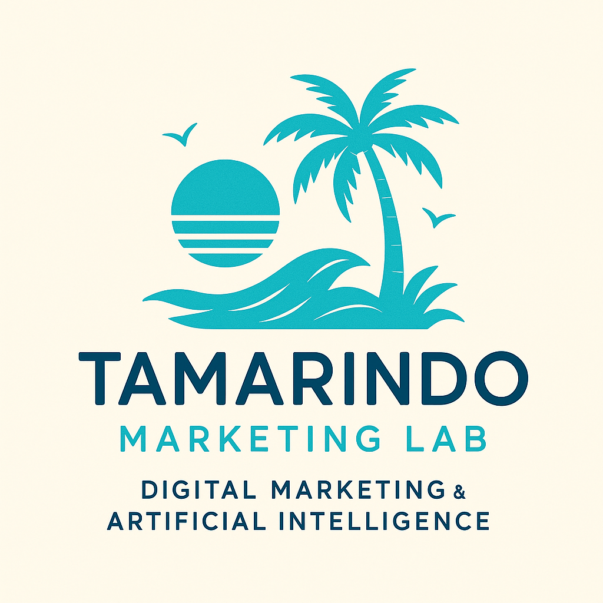

Innovación digital impulsada por inteligencia artificial
Bienvenido a Tamarindo Marketing Lab, una agencia costarricense especializada en marketing digital, desarrollo web e inteligencia artificial. Ayudamos a empresas y emprendedores a fortalecer su presencia digital mediante estrategias innovadoras, creatividad y tecnología.
Tamarindo Marketing Lab es una agencia dedicada a impulsar el crecimiento de empresas mediante soluciones digitales modernas. Nuestro equipo combina marketing, diseño, análisis de datos e inteligencia artificial para desarrollar estrategias efectivas y adaptadas a las necesidades de cada cliente.
Brindar soluciones innovadoras de marketing digital apoyadas por inteligencia artificial para impulsar el crecimiento y competitividad de nuestros clientes.
Convertirnos en una agencia líder en Costa Rica en estrategias digitales y transformación tecnológica.
Creación y administración de contenido para redes sociales.
Diseño de logotipos, banners y material promocional.
Creación de sitios web modernos y responsivos.
Implementación de herramientas inteligentes para optimizar procesos.
Generación de contenido digital para marcas y empresas.
Asesoramiento para procesos de transformación digital.

Correo: contacto@tamarindomarketinglab.com
Teléfono: +506 8888-8888
Ubicación: San José, Costa Rica
Horario: Lunes a Viernes de 8:00 a.m. a 5:00 p.m.